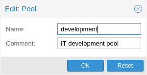
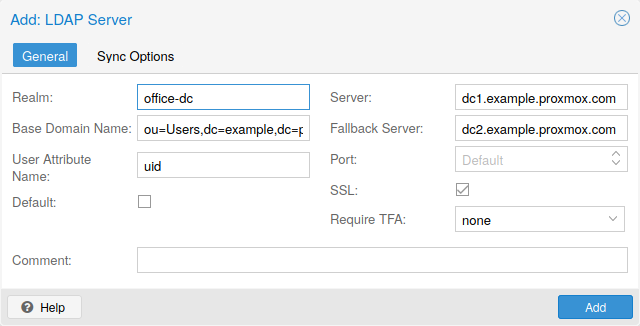
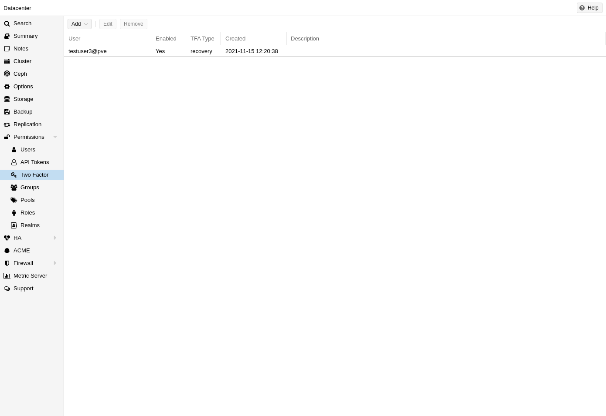
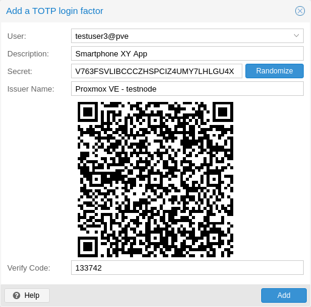
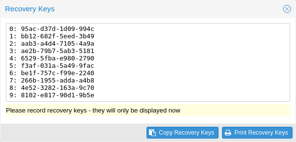
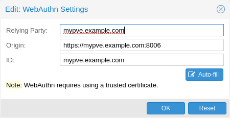
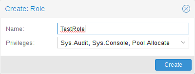

11. 사용자 관리#
Proxmox VE는 Linux PAM, 통합 Proxmox VE 인증 서버, LDAP, Microsoft Active Directory 및 OpenID Connect와 같은 여러 인증 소스를 지원합니다.
모든 객체(VM, 스토리지, 노드 등)에 대한 역할 기반 사용자 및 권한 관리를 사용하면 세분화된 액세스를 정의할 수 있습니다.
11.1. 사용자#
Proxmox VE는 사용자 속성을 /etc/pve/user.cfg에 저장합니다. 비밀번호는 여기에 저장되지 않습니다. 대신 사용자는 아래에 설명된 인증 영역과 연결됩니다. 따라서 사용자는 종종 <userid>@
이 파일의 각 사용자 항목에는 다음 정보가 포함됩니다.
이름
성
이메일 주소
그룹 멤버십
선택적 만료 날짜
이 사용자에 대한 의견 또는 메모
이 사용자의 활성화 여부
선택적 2단계 인증 키
사용자를 비활성화하거나 삭제하거나 설정된 만료 날짜가 과거인 경우 이 사용자는 새 세션에 로그인하거나 새 작업을 시작할 수 없습니다. 이 사용자가 이미 시작한 모든 작업(예: 터미널 세션)은 이러한 이벤트로 인해 자동으로 종료되지 않습니다.
11.1.1. 시스템 관리자#
시스템의 루트 사용자는 항상 Linux PAM 영역을 통해 로그인할 수 있으며 무제한 관리자입니다. 이 사용자는 삭제할 수 없지만 속성은 변경할 수 있습니다. 시스템 메일은 이 사용자에게 할당된 이메일 주소로 전송됩니다.
11.2. 그룹#
각 사용자는 여러 그룹의 멤버가 될 수 있습니다. 그룹은 액세스 권한을 구성하는 데 선호되는 방법입니다. 개별 사용자 대신 그룹에 항상 권한을 부여해야 합니다. 그렇게 하면 훨씬 더 유지 관리하기 쉬운 액세스 제어 목록을 얻을 수 있습니다.
11.3. API 토큰#
API 토큰은 다른 시스템, 소프트웨어 또는 API 클라이언트에서 REST API의 대부분에 대한 상태 비저장 액세스를 허용합니다. 토큰은 개별 사용자에 대해 생성될 수 있으며 액세스 범위와 기간을 제한하기 위해 별도의 권한과 만료 날짜를 지정할 수 있습니다. API 토큰이 손상되면 사용자 자체를 비활성화하지 않고도 취소할 수 있습니다.
API 토큰은 두 가지 기본 유형으로 제공됩니다.
분리된 권한: 토큰은 ACL로 명시적으로 액세스해야 합니다. 유효 권한은 사용자 및 토큰 권한을 교차하여 계산됩니다.
전체 권한: 토큰의 권한은 연결된 사용자의 권한과 동일합니다.
API 토큰을 사용하려면 API 요청을 할 때 HTTP 헤더 Authorization을 PVEAPIToken=USER@REALM!TOKENID=UUID 형식의 표시된 값으로 설정하거나 API 클라이언트 설명서를 참조하세요.
11.4. 리소스 풀#

리소스 풀은 가상 머신, 컨테이너, 스토리지 장치의 집합입니다. 특정 사용자가 특정 리소스 세트에 대한 액세스를 제어해야 하는 경우 권한 처리에 유용합니다. 리소스별로 관리할 필요 없이 요소 세트에 단일 권한을 적용할 수 있기 때문입니다. 리소스 풀은 종종 그룹과 함께 사용되므로 그룹 구성원은 머신 세트와 스토리지에 대한 권한을 갖습니다.
11.5. 인증 영역#
Proxmox VE 사용자는 외부 영역에 있는 사용자의 대응자일 뿐이므로 영역은 /etc/pve/domains.cfg에서 구성해야 합니다. 다음 영역(인증 방법)을 사용할 수 있습니다.
Linux PAM 표준 인증
Linux PAM은 시스템 전체 사용자 인증을 위한 프레임워크입니다. 이러한 사용자는 adduser와 같은 명령으로 호스트 시스템에서 생성됩니다. PAM 사용자가 Proxmox VE 호스트 시스템에 있는 경우 해당 항목을 Proxmox VE에 추가하여 이러한 사용자가 시스템 사용자 이름과 비밀번호를 통해 로그인할 수 있도록 할 수 있습니다.
Proxmox VE 인증 서버
이것은 /etc/pve/priv/shadow.cfg에 해시된 비밀번호를 저장하는 Unix와 유사한 비밀번호 저장소입니다. 비밀번호는 SHA-256 해싱 알고리즘을 사용하여 해시됩니다. 이것은 사용자가 Proxmox VE 외부에 액세스할 필요가 없는 소규모(또는 중간 규모) 설치에 가장 편리한 영역입니다. 이 경우 사용자는 Proxmox VE에서 완전히 관리되며 GUI를 통해 자신의 비밀번호를 변경할 수 있습니다.
LDAP
LDAP(Lightweight Directory Access Protocol)는 디렉토리 서비스를 사용하여 인증을 위한 개방형 크로스 플랫폼 프로토콜입니다. OpenLDAP는 LDAP 프로토콜의 인기 있는 오픈 소스 구현입니다.
Microsoft Active Directory(AD)
Microsoft Active Directory(AD)는 Windows 도메인 네트워크용 디렉터리 서비스이며 Proxmox VE의 인증 영역으로 지원됩니다. LDAP를 인증 프로토콜로 지원합니다.
OpenID Connect
OpenID Connect는 OATH 2.0 프로토콜 위에 ID 계층으로 구현됩니다. 클라이언트가 외부 인증 서버에서 수행한 인증을 기반으로 사용자의 ID를 확인할 수 있습니다.
11.5.1. Linux PAM 표준 인증#
Linux PAM은 호스트 시스템 사용자에 해당하므로 사용자가 로그인할 수 있는 각 노드에 시스템 사용자가 있어야 합니다. 사용자는 일반적인 시스템 비밀번호로 인증합니다. 이 영역은 기본적으로 추가되며 제거할 수 없습니다. 구성 가능성 측면에서 관리자는 영역에서 로그인 시 2단계 인증을 요구하고 영역을 기본 인증 영역으로 설정할 수 있습니다.
11.5.2. Proxmox VE 인증 서버#
Proxmox VE 인증 서버 영역은 간단한 Unix와 유사한 암호 저장소입니다. 영역은 기본적으로 생성되며 Linux PAM과 마찬가지로 사용 가능한 유일한 구성 항목은 영역 사용자에 대한 2단계 인증을 요구하고 로그인을 위한 기본 영역으로 설정하는 기능입니다.
다른 Proxmox VE 영역 유형과 달리 사용자는 다른 시스템에 대해 인증하는 대신 Proxmox VE를 통해 완전히 생성되고 인증됩니다. 따라서 생성 시 이 유형의 사용자에 대한 암호를 설정해야 합니다.
11.5.3. LDAP#
사용자 인증을 위해 외부 LDAP 서버(예: OpenLDAP)를 사용할 수도 있습니다. 이 영역 유형에서 사용자는 사용자 속성 이름(user_attr) 필드에 지정된 사용자 이름 속성을 사용하여 기본 도메인 이름(base_dn)으로 검색됩니다.
서버와 선택적 대체 서버를 구성할 수 있으며 SSL을 통해 연결을 암호화할 수 있습니다. 또한, 디렉토리와 그룹에 대한 필터를 구성할 수 있습니다. 필터를 사용하면 영역의 범위를 더욱 제한할 수 있습니다.
예를 들어, 사용자가 다음 LDIF 데이터 세트를 통해 표현되는 경우:
# user1 of People at ldap-test.com
dn: uid=user1,ou=People,dc=ldap-test,dc=com
objectClass: top
objectClass: person
objectClass: organizationalPerson
objectClass: inetOrgPerson
uid: user1
cn: Test User 1
sn: Testers
description: This is the first test user.
기본 도메인 이름은 ou=People,dc=ldap-test,dc=com이고 사용자 속성은 uid입니다.
Proxmox VE가 사용자를 쿼리하고 인증하기 전에 LDAP 서버에 인증(바인딩)해야 하는 경우 /etc/pve/domains.cfg의 bind_dn 속성을 통해 바인드 도메인 이름을 구성할 수 있습니다. 그런 다음 암호는 /etc/pve/priv/ldap/
인증서를 확인하려면 capath를 설정해야 합니다. LDAP 서버의 CA 인증서에 직접 설정하거나 모든 신뢰할 수 있는 CA 인증서(/etc/ssl/certs)가 포함된 시스템 경로에 설정할 수 있습니다. 또한 웹 인터페이스를 통해서도 수행할 수 있는 verify 옵션을 설정해야 합니다.
LDAP 서버 영역에 대한 주요 구성 옵션은 다음과 같습니다.
영역(realm): Proxmox VE 사용자의 영역 식별자
기본 도메인 이름(base_dn): 사용자가 검색되는 디렉토리
사용자 속성 이름(user_attr): 사용자가 로그인할 사용자 이름이 포함된 LDAP 속성
서버(server1): LDAP 디렉토리를 호스팅하는 서버
폴백 서버(server2): 기본 서버에 도달할 수 없는 경우를 대비한 선택적 폴백 서버 주소
포트(port): LDAP 서버가 수신하는 포트
11.5.4. Microsoft Active Directory(AD)#
Microsoft AD를 영역으로 설정하려면 서버 주소와 인증 도메인을 지정해야 합니다. Active Directory는 선택적 폴백 서버, 포트, SSL 암호화와 같은 LDAP와 동일한 대부분의 속성을 지원합니다. 또한 구성 후 동기화 작업을 통해 사용자를 Proxmox VE에 자동으로 추가할 수 있습니다.
LDAP와 마찬가지로 Proxmox VE가 AD 서버에 바인딩하기 전에 인증해야 하는 경우 Bind User(bind_dn) 속성을 구성해야 합니다. 이 속성은 일반적으로 Microsoft AD에 기본적으로 필요합니다.
Microsoft Active Directory의 주요 구성 설정은 다음과 같습니다.
영역(realm): Proxmox VE 사용자의 영역 식별자
도메인(domain): 서버의 AD 도메인
서버(server1): 서버의 FQDN 또는 IP 주소
폴백 서버(server2): 기본 서버에 연결할 수 없는 경우를 대비한 선택적 폴백 서버 주소
포트(port): Microsoft AD 서버가 수신하는 포트
11.5.5. LDAP 기반 영역 동기화#

Proxmox VE에 수동으로 추가하지 않고도 LDAP 기반 영역(LDAP 및 Microsoft Active Directory)의 사용자와 그룹을 자동으로 동기화할 수 있습니다. 웹 인터페이스의 인증 패널의 추가/편집 창이나 pveum realm add/modify 명령을 통해 동기화 옵션에 액세스할 수 있습니다. 그런 다음 GUI의 인증 패널이나 다음 명령을 사용하여 동기화 작업을 수행할 수 있습니다.
pveum realm sync <realm>
사용자와 그룹은 클러스터 전체 구성 파일인 /etc/pve/user.cfg에 동기화됩니다.
 속성에 대한 속성
속성에 대한 속성
동기화 응답에 사용자 속성이 포함된 경우 user.cfg의 일치하는 사용자 속성에 동기화됩니다. 예: firstname 또는 lastname.
속성 이름이 Proxmox VE 속성과 일치하지 않으면 sync_attributes 옵션을 사용하여 구성에서 사용자 지정 필드 대 필드 맵을 설정할 수 있습니다.
이러한 속성이 사라지는 경우 처리되는 방식은 동기화 옵션을 통해 제어할 수 있습니다(아래 참조).
동기화 구성
LDAP 기반 영역을 동기화하기 위한 구성 옵션은 추가/편집 창의 동기화 옵션 탭에서 찾을 수 있습니다.
구성 옵션은 다음과 같습니다.
바인드 사용자(bind_dn): 사용자 및 그룹을 쿼리하는 데 사용되는 LDAP 계정을 나타냅니다. 이 계정은 원하는 모든 항목에 액세스할 수 있어야 합니다. 설정된 경우 검색은 바인딩을 통해 수행됩니다. 그렇지 않으면 검색은 익명으로 수행됩니다. 사용자는 완전한 LDAP 형식의 고유 이름(DN)이어야 합니다(예: cn=admin,dc=example,dc=com).
그룹 이름 속성(group_name_attr): 사용자의 그룹을 나타냅니다. user.cfg의 일반적인 문자 제한을 준수하는 항목만 동기화됩니다. 그룹은 이름 충돌을 방지하기 위해 이름에 -$realm을 첨부하여 동기화됩니다. 동기화가 수동으로 만든 그룹을 덮어쓰지 않도록 하십시오.
사용자 클래스(user_classes): 사용자와 관련된 객체 클래스입니다.
그룹 클래스(group_classes): 그룹과 관련된 객체 클래스입니다.
이메일 속성: LDAP 기반 서버가 사용자 이메일 주소를 지정하는 경우 여기에 연관된 속성을 설정하여 동기화에 포함할 수도 있습니다. 명령줄에서 –sync_attributes 매개변수를 통해 이를 달성할 수 있습니다.
사용자 필터(filter): 특정 사용자를 대상으로 하는 추가 필터 옵션입니다.
그룹 필터(group_filter): 특정 그룹을 대상으로 하는 추가 필터 옵션입니다.
동기화 옵션

이전 섹션에서 지정한 옵션 외에도 동기화 작업의 동작을 설명하는 추가 옵션을 구성할 수 있습니다.
이러한 옵션은 동기화 전에 매개변수로 설정되거나 realm 옵션 sync-defaults-options를 통해 기본값으로 설정됩니다.
동기화를 위한 주요 옵션은 다음과 같습니다.
범위(scope): 동기화할 내용의 범위입니다. 사용자, 그룹 또는 둘 다일 수 있습니다.
새로 활성화(enable-new): 설정하면 새로 동기화된 사용자가 활성화되고 로그인할 수 있습니다. 기본값은 true입니다.
사라진 항목 제거(remove-vanished): 활성화하면 동기화 응답에서 반환되지 않을 때 제거할지 여부를 결정하는 옵션 목록입니다. 옵션은 다음과 같습니다.
ACL(acl): 동기화 응답에서 반환되지 않은 사용자 및 그룹의 ACL을 제거합니다. 이는 대부분 Entry와 함께 의미가 있습니다.
항목(entry): 동기화 응답에서 반환되지 않는 항목(예: 사용자 및 그룹)을 제거합니다.
속성(properties): 동기화 응답의 사용자가 해당 속성을 포함하지 않는 항목의 속성을 제거합니다. 여기에는 동기화에서 설정되지 않은 모든 속성이 포함됩니다. 예외는 토큰과 활성화 플래그이며, 이 옵션을 활성화해도 유지됩니다.
미리보기(dry-run): config에 데이터가 기록되지 않습니다. 이는 user.cfg에 동기화되는 사용자와 그룹을 확인하려는 경우에 유용합니다.
예약된 문자
특정 문자는 예약되어 있으며(RFC2253 참조) 적절하게 이스케이프하지 않으면 DN의 속성 값에서 쉽게 사용할 수 없습니다.
다음 문자는 이스케이프해야 합니다.
시작 또는 끝에 공백( )
시작 부분에 숫자 기호(#)
쉼표(,)
더하기 기호(+)
큰따옴표(“)
슬래시(/)
각괄호(<>)
세미콜론(;)
등호(=)
DN에서 이러한 문자를 사용하려면 속성 값을 큰따옴표로 묶습니다. 예를 들어, CN(일반 이름) 예제인 User를 가진 사용자와 바인딩하려면 bind_dn의 값으로 CN=”Example, User”,OU=people,DC=example,DC=com을 사용합니다.
이는 base_dn, bind_dn 및 group_dn 속성에 적용됩니다.
11.5.6. OpenID Connect#
주요 OpenID Connect 구성 옵션은 다음과 같습니다.
발급자 URL(issuer-url): 권한 부여 서버의 URL입니다. Proxmox는 OpenID Connect Discovery 프로토콜을 사용하여 추가 세부 정보를 자동으로 구성합니다.
암호화되지 않은 http:// URL을 사용할 수 있지만 암호화된 https:// 연결을 사용하는 것이 좋습니다.
영역(realm): Proxmox VE 사용자의 영역 식별자
클라이언트 ID(client-id): OpenID 클라이언트 ID.
클라이언트 키(client-key): 선택 사항인 OpenID 클라이언트 키.
사용자 자동 생성(autocreate): 사용자가 없으면 자동으로 생성합니다. OpenID 서버에서 인증이 수행되지만 모든 사용자는 여전히 Proxmox VE 사용자 구성에 항목이 필요합니다. 수동으로 추가하거나 autocreate 옵션을 사용하여 새 사용자를 자동으로 추가할 수 있습니다.
사용자 이름 클레임(username-claim): 고유한 사용자 이름(제목, 사용자 이름 또는 이메일)을 생성하는 데 사용되는 OpenID 클레임입니다.
사용자 이름 매핑
OpenID Connect 사양은 주체라는 단일 고유 속성(OpenID 용어로 클레임)을 정의합니다. 기본적으로 이 속성의 값을 사용하여 @와 영역 이름을 간단히 추가하여 Proxmox VE 사용자 이름을 생성합니다: ${subject}@${realm}.
안타깝게도 대부분의 OpenID 서버는 DGH76OKH34BNG3245SB와 같이 주체에 임의의 문자열을 사용하므로 일반적인 사용자 이름은 DGH76OKH34BNG3245SB@yourrealm과 같습니다. 고유하지만 사람이 이러한 임의의 문자열을 기억하기 어려워 실제 사용자를 이와 연관시키는 것은 사실상 불가능합니다.
username-claim 설정을 사용하면 사용자 이름 매핑에 다른 속성을 사용할 수 있습니다. OpenID Connect 서버에서 해당 속성을 제공하고 고유성을 보장하는 경우 username으로 설정하는 것이 좋습니다.
또 다른 옵션은 이메일을 사용하는 것입니다. 이 경우 사람이 읽을 수 있는 사용자 이름도 생성됩니다. 다시 말하지만, 이 설정은 서버에서 이 속성의 고유성을 보장하는 경우에만 사용하세요.
예제
다음은 Google을 사용하여 OpenID 영역을 만드는 예입니다. –client-id 및 –client-key를 Google OpenID 설정의 값으로 바꿔야 합니다.
pveum realm add myrealm1 --type openid --issuer-url https://accounts.google.com --client-id XXXX --client-key YYYY --username-claim email
위의 명령은 –username-claim email을 사용하므로 Proxmox VE 측의 사용자 이름은 example.user@google.com@myrealm1처럼 보입니다.
Keycloak(https://www.keycloak.org/)은 OpenID Connect를 지원하는 인기 있는 오픈 소스 ID 및 액세스 관리 도구입니다. 다음 예에서 –issuer-url과 –client-id를 사용자 정보로 바꿔야 합니다.
pveum realm add myrealm2 --type openid --issuer-url https://your.server:8080/realms/your-realm --client-id XXX --username-claim username
–username-claim username을 사용하면 Proxmox VE 측에서 example.user@myrealm2와 같은 간단한 사용자 이름을 사용할 수 있습니다.
11.6. 2단계 인증#
2단계 인증을 사용하는 방법에는 두 가지가 있습니다.
인증 영역에서 TOTP(시간 기반 일회용 비밀번호) 또는 YubiKey OTP를 통해 요구할 수 있습니다. 이 경우 새로 생성된 사용자는 2단계 인증 없이는 로그인할 방법이 없으므로 키를 즉시 추가해야 합니다. TOTP의 경우 사용자는 먼저 로그인할 수 있는 경우 나중에 TOTP를 변경할 수도 있습니다.
또는 영역에서 2단계 인증을 시행하지 않더라도 나중에 2단계 인증을 선택할 수 있습니다.
11.6. 1. 사용 가능한 2단계 인증#
스마트폰이나 보안 키를 분실하여 영구적으로 계정에 액세스할 수 없는 상황을 방지하기 위해 여러 개의 2단계 인증을 설정할 수 있습니다.
영역에서 시행하는 TOTP 및 YubiKey OTP 외에도 다음과 같은 2단계 인증 방법을 사용할 수 있습니다.
사용자가 구성한 TOTP(시간 기반 일회용 비밀번호). 공유 비밀과 현재 시간에서 파생된 짧은 코드로, 30초마다 변경됩니다.
WebAuthn(웹 인증). 인증을 위한 일반적인 표준입니다. 하드웨어 키나 컴퓨터 또는 스마트폰의 신뢰할 수 있는 플랫폼 모듈(TPM)과 같은 다양한 보안 장치에서 구현됩니다.
일회용 복구 키. 인쇄하여 안전한 장소에 잠그거나 전자 금고에 디지털 방식으로 저장해야 하는 키 목록입니다. 각 키는 한 번만 사용할 수 있습니다. 다른 모든 2차 인증 요소가 손실되거나 손상된 경우에도 잠기지 않도록 하는 데 적합합니다.
WebAuthn이 지원되기 전에는 사용자가 U2F를 설정할 수 있었습니다. 기존 U2F 요소를 계속 사용할 수 있지만 서버에서 구성되면 WebAuthn으로 전환하는 것이 좋습니다.
11.6. 2. 영역 강제 2단계 인증#
인증 영역을 추가하거나 편집할 때 TFA 드롭다운 상자를 통해 사용 가능한 방법 중 하나를 선택하여 이를 수행할 수 있습니다. 영역에서 TFA가 활성화되면 필수 사항이 되며, 구성된 TFA가 있는 사용자만 로그인할 수 있습니다.
현재 사용 가능한 방법은 두 가지입니다.
시간 기반 OATH(TOTP)
이 방법은 표준 HMAC-SHA1 알고리즘을 사용하며, 현재 시간은 사용자가 구성한 키로 해시됩니다. 시간 단계와 비밀번호 길이 매개변수는 구성할 수 있습니다.
사용자는 여러 개의 키를 구성할 수 있으며(공백으로 구분) 키는 Base32(RFC3548) 또는 16진수 표기법으로 지정할 수 있습니다.
Proxmox VE는 키 생성 도구(oathkeygen)를 제공하며, 이 도구는 Base32 표기법으로 임의의 키를 출력하며, oathtool 명령줄 도구나 Android Google Authenticator, FreeOTP, andOTP 또는 이와 유사한 애플리케이션과 같은 다양한 OTP 도구에서 직접 사용할 수 있습니다.
YubiKey OTP
YubiKey를 통해 인증하려면 Yubico API ID, API KEY 및 검증 서버 URL을 구성해야 하며 사용자는 YubiKey를 사용할 수 있어야 합니다. YubiKey에서 키 ID를 얻으려면 USB를 통해 연결한 후 YubiKey를 한 번 트리거하고 입력한 비밀번호의 처음 12자를 사용자의 Key IDs 필드에 복사할 수 있습니다.
YubiCloud를 사용하거나 자체 검증 서버를 호스팅하는 방법에 대한 YubiKey OTP 설명서를 참조하세요.
11.6. 3. 2단계 인증의 제한 및 잠금#
2단계 인증은 사용자의 비밀번호가 유출되거나 추측되는 경우 사용자를 보호하기 위한 것입니다. 그러나 일부 인증 요소는 여전히 무차별 대입 공격으로 깨질 수 있습니다. 이러한 이유로 사용자는 2단계 인증 로그인 시도에 너무 많이 실패하면 잠깁니다.
TOTP의 경우 8번 실패하면 사용자의 TOTP 인증 요소가 비활성화됩니다. 복구 키로 로그인하면 잠금이 해제됩니다. TOTP가 사용 가능한 유일한 인증 요소인 경우 관리자의 개입이 필요하며 사용자에게 즉시 비밀번호를 변경하도록 요구하는 것이 좋습니다.
FIDO2/Webauthn 및 복구 키는 무차별 대입 공격에 덜 취약하므로 제한이 더 높지만(100번 시도) 초과 시 모든 2단계 인증 요소가 1시간 동안 차단됩니다.
관리자는 UI의 사용자 목록이나 명령줄을 통해 언제든지 사용자의 2단계 인증을 잠금 해제할 수 있습니다.
pveum user tfa unlock joe@pve
11.6. 4. 사용자 구성 TOTP 인증#

사용자는 사용자 목록의 TFA 버튼을 통해 로그인 시 TOTP 또는 WebAuthn을 두 번째 요소로 활성화하도록 선택할 수 있습니다(영역에서 YubiKey OTP를 적용하지 않는 한).
사용자는 언제든지 일회성 복구 키를 추가하고 사용할 수 있습니다.
TFA 창을 열면 사용자에게 TOTP 인증을 설정하는 대화 상자가 표시됩니다. 비밀 필드에는 키가 포함되어 있으며, 이는 Randomize 버튼을 통해 무작위로 생성할 수 있습니다. 선택 사항인 발급자 이름을 추가하여 TOTP 앱에 키의 소유에 대한 정보를 제공할 수 있습니다. 대부분의 TOTP 앱은 발급자 이름과 해당 OTP 값을 함께 표시합니다. 사용자 이름은 TOTP 앱의 QR 코드에도 포함됩니다.
키를 생성하면 QR 코드가 표시되며, FreeOTP와 같은 대부분의 OTP 앱에서 사용할 수 있습니다. 그런 다음 사용자는 현재 사용자 비밀번호를 확인해야 하며(루트로 로그인한 경우 제외), TOTP 키를 올바르게 사용할 수 있는지 확인해야 합니다. 이를 위해 현재 OTP 값을 검증 코드 필드에 입력하고 적용 버튼을 누릅니다.
11.6. 5. TOTP#

서버 설정이 필요하지 않습니다. 스마트폰에 TOTP 앱(예: FreeOTP)을 설치하고 Proxmox VE 웹 인터페이스를 사용하여 TOTP 요소를 추가하기만 하면 됩니다.
11.6. 6. WebAuthn#
WebAuthn이 작동하려면 두 가지가 필요합니다.
신뢰할 수 있는 HTTPS 인증서(예: Let’s Encrypt 사용). 신뢰할 수 없는 인증서로도 작동할 가능성이 있지만 일부 브라우저는 신뢰할 수 없는 경우 WebAuthn 작업을 경고하거나 거부할 수 있습니다.
WebAuthn 구성을 설정합니다(Proxmox VE 웹 인터페이스에서 Datacenter → Options → WebAuthn Settings 참조). 대부분의 설정에서 자동으로 채워질 수 있습니다.
이 두 가지 요구 사항을 모두 충족하면 Datacenter → Permissions → Two Factor 아래의 Two Factor 패널에서 WebAuthn 구성을 추가할 수 있습니다.
11.6. 7. 복구 키#

복구 키 코드는 준비가 필요 없습니다. Datacenter → Permissions → Two Factor 패널에서 복구 키 세트를 만들면 됩니다.
11.6. 8. 서버 측 Webauthn 구성#

사용자가 WebAuthn 인증을 사용할 수 있도록 하려면 유효한 SSL 인증서가 있는 유효한 도메인을 사용해야 합니다. 그렇지 않으면 일부 브라우저에서 경고를 표시하거나 인증을 전혀 거부할 수 있습니다.
이 작업은 /etc/pve/datacenter.cfg를 통해 수행됩니다. 예를 들어:
webauthn: rp=mypve.example.com,origin=https://mypve.example.com:8006,id=mypve.example.com
11.6. 9. 서버 측 U2F 구성#
사용자가 U2F 인증을 사용할 수 있도록 하려면 유효한 SSL 인증서가 있는 유효한 도메인을 사용해야 할 수 있습니다. 그렇지 않으면 일부 브라우저에서 경고를 인쇄하거나 U2F 사용을 완전히 거부할 수 있습니다. 처음에는 AppId를 구성해야 합니다.
이 작업은 /etc/pve/datacenter.cfg를 통해 수행됩니다. 예를 들어:
u2f: appid=https://mypve.example.com:8006
단일 노드의 경우 AppId는 브라우저에서 사용되는 것과 정확히 같은 웹 인터페이스의 주소일 수 있으며, 위에 표시된 대로 https:// 및 포트를 포함합니다. 일부 브라우저는 AppId를 일치시킬 때 다른 브라우저보다 더 엄격할 수 있습니다.
여러 노드를 사용하는 경우 대부분 브라우저와 호환되는 것으로 보이는 appid.json 파일을 제공하는 별도의 https 서버를 갖는 것이 가장 좋습니다. 모든 노드가 동일한 최상위 도메인의 하위 도메인을 사용하는 경우 TLD를 AppId로 사용하면 충분할 수 있습니다. 그러나 일부 브라우저는 이를 허용하지 않을 수 있습니다.
참고 잘못된 AppId는 일반적으로 오류를 생성하지만, 특히 Chromium에서 하위 도메인을 통해 액세스하는 노드에 대해 최상위 도메인 AppId를 사용할 때 이런 일이 발생하지 않는 상황이 발생했습니다. 이러한 이유로 나중에 AppId를 변경하면 기존 U2F 등록을 사용할 수 없게 되므로 여러 브라우저로 구성을 테스트하는 것이 좋습니다.
11.6. 10. 사용자로서 U2F 활성화#
U2F 인증을 활성화하려면 TFA 창의 U2F 탭을 열고 현재 비밀번호를 입력하고(루트로 로그인하지 않은 경우) 등록 버튼을 누릅니다. 서버가 올바르게 설정되었고 브라우저가 서버에서 제공한 AppId를 수락하면 사용자에게 U2F 기기의 버튼을 누르라는 메시지가 나타납니다(YubiKey인 경우 버튼 표시등이 초당 약 두 번씩 꾸준히 켜지고 꺼져야 함).
Firefox 사용자는 U2F 토큰을 사용하기 전에 about:config를 통해 security.webauth.u2f를 활성화해야 할 수 있습니다.
11.7. 권한 관리#
사용자가 작업(예: VM 구성의 일부를 나열, 수정 또는 삭제)을 수행하려면 사용자에게 적절한 권한이 있어야 합니다.
Proxmox VE는 역할 및 경로 기반 권한 관리 시스템을 사용합니다. 권한 표의 항목을 사용하면 사용자, 그룹 또는 토큰이 개체 또는 경로에 액세스할 때 특정 역할을 수행할 수 있습니다. 즉, 이러한 액세스 규칙은 (경로, 사용자, 역할), (경로, 그룹, 역할) 또는 (경로, 토큰, 역할)의 3중으로 표현될 수 있으며, 역할에는 허용된 작업 세트가 포함되고 경로는 이러한 작업의 대상을 나타냅니다.
11.7.1. 역할#
역할은 단순히 권한 목록입니다. Proxmox VE에는 대부분의 요구 사항을 충족하는 여러 가지 미리 정의된 역할이 제공됩니다.
Administrator: 모든 권한이 있음
NoAccess: 권한이 없음(액세스 금지에 사용)
PVEAdmin: 대부분 작업을 수행할 수 있지만 시스템 설정(Sys.PowerMgmt, Sys.Modify, Realm.Allocate)이나 권한(Permissions.Modify)을 수정할 권한이 없음
PVEAuditor: 읽기 전용 액세스 권한 있음
PVEDatastoreAdmin: 백업 공간 및 템플릿을 만들고 할당
PVEDatastoreUser: 백업 공간을 할당하고 스토리지를 확인
PVEMappingAdmin: 리소스 매핑을 관리
PVEMappingUser: 리소스 매핑을 보고 사용
PVEPoolAdmin: 풀을 할당
PVEPoolUser: 풀을 확인
PVESDNAdmin: SDN 구성을 관리
PVESDNUser: 브리지/vnet에 액세스
PVESysAdmin: 감사, 시스템 콘솔 및 시스템 로그
PVETemplateUser: 템플릿을 보고 복제
PVEUserAdmin: 관리 users
PVEVMAdmin: VM을 완전히 관리합니다.
PVEVMUser: CD-ROM, VM 콘솔, VM 전원 관리 보기, 백업, 구성
GUI에서 미리 정의된 역할의 전체 세트를 볼 수 있습니다.
GUI 또는 명령줄을 통해 새 역할을 추가할 수 있습니다.

GUI에서 Datacenter의 Permissions → Roles 탭으로 이동하여 Create 버튼을 클릭합니다. 여기서 역할 이름을 설정하고 Privileges 드롭다운 메뉴에서 원하는 권한을 선택할 수 있습니다.
명령줄을 통해 역할을 추가하려면 다음과 같이 pveum CLI 도구를 사용할 수 있습니다.
pveum role add VM_Power-only --privs "VM.PowerMgmt VM.Console"
pveum role add Sys_Power-only --privs "Sys.PowerMgmt Sys.Console"
11.7.2. 권한#
권한은 특정 작업을 수행할 수 있는 권한입니다. 관리를 간소화하기 위해 권한 목록은 역할로 그룹화되며, 이를 권한 표에서 사용할 수 있습니다. 권한은 역할의 일부가 아니면 사용자와 경로에 직접 할당할 수 없습니다.
현재 다음 권한을 지원합니다.
노드/시스템 관련 권한
Group.Allocate: 그룹 생성/수정/제거
Mapping.Audit: 리소스 매핑 보기
Mapping.Modify: 리소스 매핑 관리
Mapping.Use: 리소스 매핑 사용
Permissions.Modify: 액세스 권한 수정
Pool.Allocate: 풀 생성/수정/제거
Pool.Audit: 풀 보기
Realm.AllocateUser: 사용자를 영역에 할당
Realm.Allocate: 인증 영역 생성/수정/제거
SDN.Allocate: SDN 구성 관리
SDN.Audit: SDN 구성 보기
Sys.Audit: 노드 상태/구성, Corosync 클러스터 구성 및 HA 구성 보기
Sys.Console: 노드에 대한 콘솔 액세스
Sys.Incoming: 다른 클러스터에서 들어오는 데이터 스트림 허용 (실험적)
Sys.Modify: 노드 네트워크 매개변수 생성/수정/제거
Sys.PowerMgmt: 노드 전원 관리(시작, 중지, 재설정, 종료, …)
Sys.Syslog: syslog 보기
User.Modify: 사용자 액세스 및 세부 정보 생성/수정/제거
가상 머신 관련 권한
SDN.Use: SDN vnet 및 로컬 네트워크 브리지에 액세스
VM.Allocate: 서버에서 VM 생성/제거
VM.Audit: VM 구성 보기
VM.Backup: VM 백업/복원
VM.Clone: VM 복제/복사
VM.Config.CDROM: CD-ROM 꺼내기/변경
VM.Config.CPU: CPU 설정 수정
VM.Config.Cloudinit: Cloud-init 매개변수 수정
VM.Config.Disk: 디스크 추가/수정/제거
VM.Config.HWType: 에뮬레이트된 하드웨어 유형 수정
VM.Config.Memory: 메모리 설정 수정
VM.Config.Network: 네트워크 장치 추가/수정/제거
VM.Config.Options: 다른 VM 구성 수정
VM.Console: VM에 대한 콘솔 액세스
VM.Migrate: 클러스터의 대체 서버로 VM 마이그레이션
VM.Monitor: VM 모니터에 액세스 (kvm)
VM.PowerMgmt: 전원 관리(시작, 중지, 재설정, 종료 등)
VM.Snapshot.Rollback: VM을 해당 스냅샷 중 하나로 롤백
VM.Snapshot: VM 스냅샷 생성/삭제
저장소 관련 권한
Datastore.Allocate: 데이터스토어 생성/수정/제거 및 볼륨 삭제
Datastore.AllocateSpace: 데이터스토어에 공간 할당
.AllocateTemplate: 템플릿 및 ISO 이미지 할당/업로드
Datastore.Audit: 데이터스토어 보기/탐색
11.7.3. 객체 및 경로#
액세스 권한은 가상 머신, 스토리지 또는 리소스 풀과 같은 객체에 할당됩니다. 파일 시스템과 같은 경로를 사용하여 이러한 객체를 처리합니다. 이러한 경로는 자연스러운 트리를 형성하며, 더 높은 레벨(더 짧은 경로)의 권한은 선택적으로 이 계층 구조 내에서 아래로 전파될 수 있습니다.
경로는 템플릿화될 수 있습니다. API 호출에 템플릿화된 경로에 대한 권한이 필요한 경우 경로에는 API 호출의 매개변수에 대한 참조가 포함될 수 있습니다. 이러한 참조는 중괄호로 지정됩니다. 일부 매개변수는 API 호출의 URI에서 암묵적으로 가져옵니다. 예를 들어, /nodes/mynode/status를 호출할 때 권한 경로 /nodes/{node}는 /nodes/mynode에 대한 권한이 필요한 반면, /access/acl에 대한 PUT 요청의 경로 {path}는 메서드의 경로 매개변수를 참조합니다.
일부 예는 다음과 같습니다.
/nodes/{node}: Proxmox VE 서버 머신에 대한 액세스
/vms: 모든 VM을 포함합니다.
/vms/{vmid}: 특정 VM에 대한 액세스
/storage/{storeid}: 특정 저장소에 대한 액세스
/pool/{poolname}: 특정 풀에 포함된 리소스에 대한 액세스
/access/groups: 그룹 관리
/access/realms/{realmid}: 영역에 대한 관리 액세스
상속
앞서 언급했듯이 개체 경로는 트리와 같은 파일 시스템을 형성하며, 권한은 해당 트리의 개체에 상속될 수 있습니다(전파 플래그는 기본적으로 설정됨). 다음 상속 규칙을 사용합니다.
개별 사용자의 권한은 항상 그룹 권한을 대체합니다.
그룹의 권한은 사용자가 해당 그룹의 멤버일 때 적용됩니다.
더 깊은 수준의 권한은 상위 수준에서 상속된 권한을 대체합니다.
NoAccess는 지정된 경로의 다른 모든 역할을 취소합니다.
또한 권한 분리 토큰은 연관된 사용자에게 없는 주어진 경로에 대한 권한을 가질 수 없습니다.
11.7.4. 풀#
풀은 가상 머신과 데이터 저장소 세트를 그룹화하는 데 사용할 수 있습니다. 그런 다음 모든 풀 멤버가 상속받는 풀(/pool/{poolid})에 대한 권한을 간단히 설정할 수 있습니다. 이는 액세스 제어를 간소화하는 좋은 방법입니다.
11.7.5. 어떤 권한이 필요한가요?#
필수 API 권한은 각 개별 메서드에 대해 문서화되어 있으며 https://pve.proxmox.com/pve-docs/api-viewer/에서 찾을 수 있습니다.
권한은 논리 및 액세스 확인 함수의 트리로 해석할 수 있는 목록으로 지정됩니다.
[“and”,
…] and [“or”, …] 현재 목록의 각(and) 또는 추가(or) 요소는 참이어야 합니다.
[“perm”,
, [ … ], …] 경로는 템플릿 매개변수입니다(객체 및 경로 참조). 나열된 모든 권한(또는 any 옵션이 사용된 경우 모든 권한)은 지정된 경로에서 허용되어야 합니다. require-param 옵션이 지정된 경우 API 호출의 스키마가 선택 사항으로 나열되어 있더라도 지정된 매개변수는 필수입니다.
[“userid-group”, [
… ], …] 호출자는 /access/groups에 나열된 권한 중 하나를 가져야 합니다. 또한 groups_param 옵션이 설정되어 있는지 여부에 따라 두 가지 가능한 검사가 있습니다.
groups_param이 설정되어 있음: API 호출에는 선택 사항이 아닌 groups 매개변수가 있으며 호출자는 나열된 모든 그룹에 나열된 권한 중 하나를 가져야 합니다.
groups_param이 설정되지 않았습니다. userid 매개변수를 통해 전달된 사용자는 존재해야 하며 호출자가 나열된 권한 중 하나라도 가지고 있는 그룹의 일부여야 합니다(/access/groups/
경로를 통해).
[“userid-param”, “self”] API 호출의 userid 매개변수에 제공된 값은 작업을 수행하는 사용자를 참조해야 합니다(일반적으로 or와 함께 사용하여 사용자가 권한이 상승되지 않았더라도 스스로 작업을 수행할 수 있도록 함).
[“userid-param”, “Realm.AllocateUser”]
사용자는 /access/realm/
에 대한 Realm.AllocateUser 액세스 권한이 필요하며, 은 userid 매개변수를 통해 전달된 사용자의 영역을 참조합니다. 사용자 ID는 @ 형식으로 전달되므로 영역과 연결되기 위해 사용자가 존재하지 않아도 됩니다.
[“perm-modify”,
] 경로는 템플릿 매개변수입니다(객체 및 경로 참조). 사용자는 Permissions.Modify 권한이 필요하거나 경로에 따라 다음 권한이 가능한 대체 권한으로 필요합니다.
/storage/…: ‘Datastore.Allocate` 필요
/vms/…: ‘VM.Allocate` 필요
/pool/…: ‘Pool.Allocate` 필요
경로가 비어 있으면 /access에 대한 Permissions.Modify가 필요합니다. 사용자에게 Permissions.Modify 권한이 없으면 지정된 경로에서 자신의 권한 하위 집합만 위임할 수 있습니다(예: PVEVMAdmin이 있는 사용자는 PVEVMUser를 할당할 수 있지만 PVEAdmin은 할당할 수 없음).
11.8. 명령줄 도구#
대부분 사용자는 GUI를 사용하여 사용자를 관리합니다. 하지만 pveum(“Proxmox VE User Manager”의 약자)이라는 모든 기능을 갖춘 명령줄 도구도 있습니다. 모든 Proxmox VE 명령줄 도구는 API를 감싸는 래퍼이므로 REST API를 통해 해당 기능에 액세스할 수도 있습니다.
간단한 사용 예는 다음과 같습니다. 도움말을 표시하려면 다음을 입력합니다.
pveum
또는(특정 명령에 대한 자세한 도움말을 표시하려면)
pveum help user add
새 사용자 만들기:
pveum user add testuser@pve -comment "Just a test"
비밀번호 설정 또는 변경(모든 영역에서 지원하지는 않음):
pveum passwd testuser@pve
사용자 비활성화:
pveum user modify testuser@pve -enable 0
새 그룹 만들기:
pveum group add testgroup
새 역할 만들기:
pveum role add PVE_Power-only -privs "VM.PowerMgmt VM.Console"